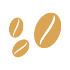
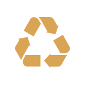

Desde Nespresso estamos comprometidos con la sociedad y el Medio Ambiente, es por eso que dedicamos todo nuestro cuidado para obtener un café excepcional.
- 
Ayudamos a las comunidades de caficultores desarrollando prácticas sustentables acompañados por más de 400 agrónomos.
- +500.000
Realizamos el cultivo de árboles para cuidar al ecosistema.
- 
Cuidamos el futuro utilizando aluminio que es infinitamente reciclable.
SABEMOS QUE HACER LO CORRECTO, IMPORTA.
ADEMÁS, A TRAVÉS DE NUESTRO PROGRAMA LOCAL DE RECICLAJE COLABORAMOS CON LA FUNDACIÓN HUERTA NIÑO AYUDANDO EN LA ALIMENTACIÓN DE MÁS DE 15.000 NIÑOS.
CONOCÉ NUESTRO PROGRAMA ACÁ